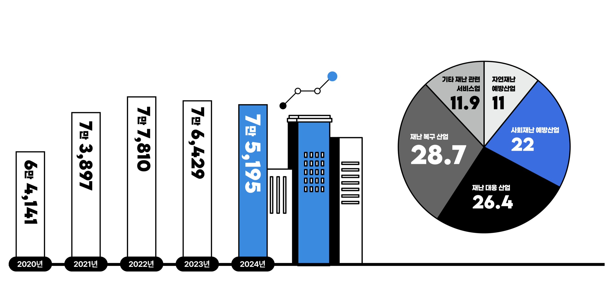
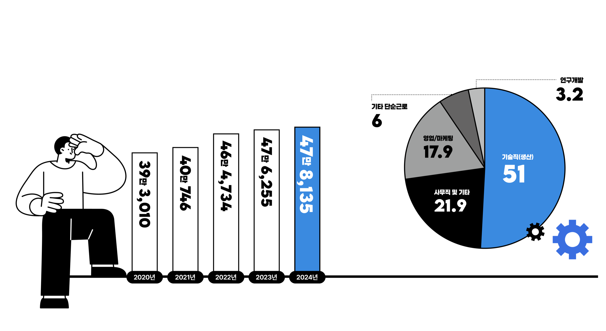
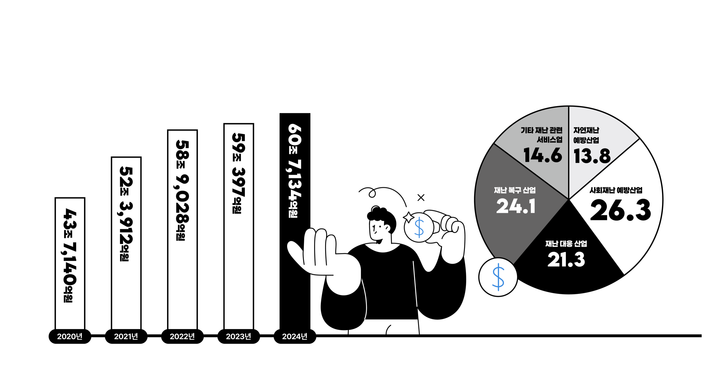
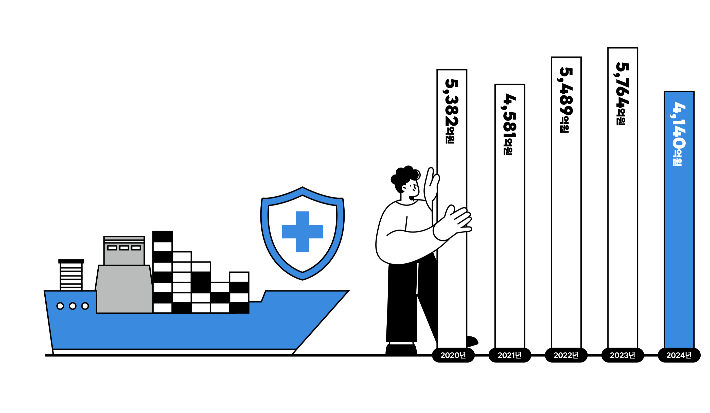

01‘재난안전산업’
‘재난안전산업’
관련 사업체 수
2024년 기준 관련 사업체 수는 7만 5,195개사로, 2020년보다 약 17% 증가했다. 2022년 정점 이후 최근 2년간은 소폭 감소해 산업 구조조정과 시장 재편 과정이 반영된 것으로 풀이된다.
세이프티 INFO
재난안전산업은 국가 경제와 사회안전망을 떠받치는 핵심 산업 중 하나다. 2025년(2024년 기준) 재난안전산업 실태조사 결과에 따르면 사업체 수는 전년대비 소폭 감소했지만 종사자 수, 매출액이 모두 꾸준한 증가세를 보이며 산업 규모가 확대되고 있는 것으로 나타났다. 다만 외형적 확대에 비해 수출 비중은 낮은 수준에 머물러 있어 경쟁력 확보를 위한 정책적 지원이 필요하다.
2024년 기준 관련 사업체 수는 7만 5,195개사로, 2020년보다 약 17% 증가했다. 2022년 정점 이후 최근 2년간은 소폭 감소해 산업 구조조정과 시장 재편 과정이 반영된 것으로 풀이된다.
재난복구 산업(28.7%)과 재난대응 산업(26.4%)이 절반 이상을 차지했다. 자연재난 예방산업은 11.0%로, 여전히 재난 이후 대응과 복구에 더 많은 자원이 투입되고 있음을 보여준다.

2024년 종사자 수는 47만 8,135명으로 전년 대비 0.39% 증가했다. ICT, 스마트 안전관리, 산업안전, 시설 유지관리 등 다양한 분야로 확장되며 전문 인력 수요가 늘어난 결과다.
기술직(생산)이 51.0%로 가장 많았으며 연구개발 인력은 3.2%에 그쳤다. 현재 산업 구조가 제품 생산과 현장 서비스 중심으로 형성돼 있음을 알 수 있다.

2024년 부문 매출액은 60조 7,134억 원으로 전년보다 2.8% 증가했다. 2020년과 비교하면 4년 만에 약 39% 증가해 시장 규모와 산업 가치가 함께 성장하고 있다.
업종별 매출액은 사회재난 예방산업이 26.3%로 가장 높았다. 산업안전 솔루션과 스마트 감시시스템 등 예방 분야가 상대적으로 높은 부가가치를 창출하고 있음을 시사한다.

2024년 수출액은 4,140억 원으로 전년 대비 28.2% 감소했다. 2023년까지 성장세를 이어왔으나 주요 수출국의 투자 위축과 국제 정세 불안정 등의 영향으로 큰 폭의 감소를 기록했다.

K-SAFETY INSIGHT
2024년 재난안전산업은 사업체 수가 소폭 감소했음에도 종사자 수와 매출액이 꾸준히 증가하며 양적 성장에서 질적 성장 단계로 진입하고 있음을 보여줬다. 산업 전체 매출은 처음으로 60조 원을 돌파했고 종사자 수도 47만 명대를 유지했다.
반면 연구개발 인력 비중은 3.2%에 불과하고 수출액은 전년 대비 28.2% 감소했다. 한 단계 더 도약하려면 기술개발 투자 확대와 국제표준 대응, 해외 실증 및 수출 지원 정책이 뒷받침돼야 한다.